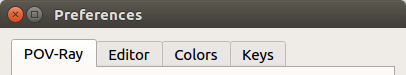

qtpovrayConfigure | November 23, 2017 |

There are two components to configuring qtpov, global preferences, and the workspace.
Everything configured in the preferences dialog, is global.
All other states, such as the open editors and the contents of the command line, are per workspace.
In the following sections, configuring the communications with povrayws is critical. Everything else is optional.
Configure:
Linux/Debian preferences are stored in ~/.config/povray/qtpov.ini
Windows preferences are stored in $HOMEPATH/AppData/Roaming/povray/qtpov.ini